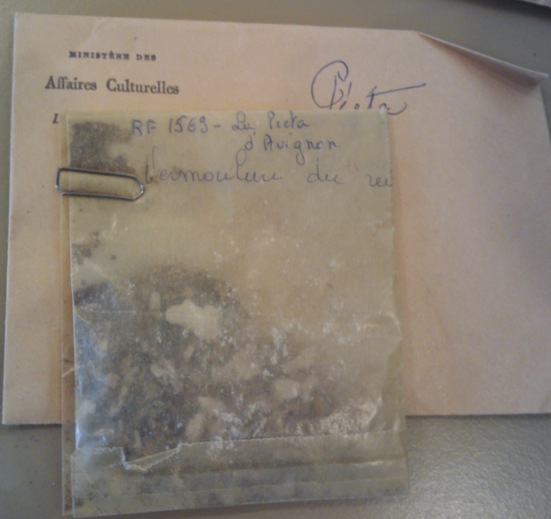
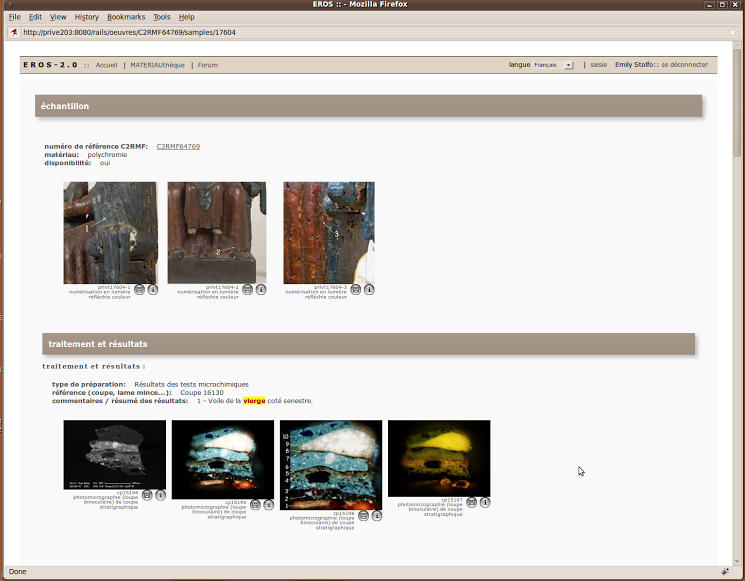

Hacking the Academic Experience
Emily Stolfo
Adjunct Faculty at Columbia, MongoDB Ruby Driver Engineer
@EmStolfo
## Even with a CS degree, I didn't really learn how to program until I was on the job.
source: code.org
- Teaching Rails at Columbia
- Identifying Hacker Habits
- Getting involved as a hacker
We will use the term in its positive incarnation.
10gen ruby driver team
NYC startup
Louvre museum
IBM
Computer Science/Art History at Columbia
source: Why's (Poignant) Guide to Ruby
Academia and hacking shouldn't be mutually exclusive.
→
- Example project(s)
- Internet
- Trying things out
- Books
- Colleagues
- Community
- Users
(Geographical and physical resources were limited.)
I then needed to become a full-stack hacker
(really quickly)
I made some assumptions when first teaching at Columbia.
As an "agile teacher", I've revamped the curriculum after making several observations.
Foundations of Computer Science are essential.
A generation in tech is arguably shorter than one in other subjects.
I had an internship last semester and I had to learn CSS, Javascript, Jquery, HTML, Python, Ajax all at once. It was a lot to take in but I definitely learned tons. I do wish I had some background going in since I felt so unprepared at the start.
(and how I tried to teach them)

source: code.org
Skillshare
General Assembly
YouTube
TEALs
Hackety hack lessons
Podcast
Rails Girls
Your potential colleagues will be better prepared.
You can fill in the holes in academic CS curricula.
No better way to reenforce your knowledge.
Strengthen your profile.
Build your network.
karma++
Thank you